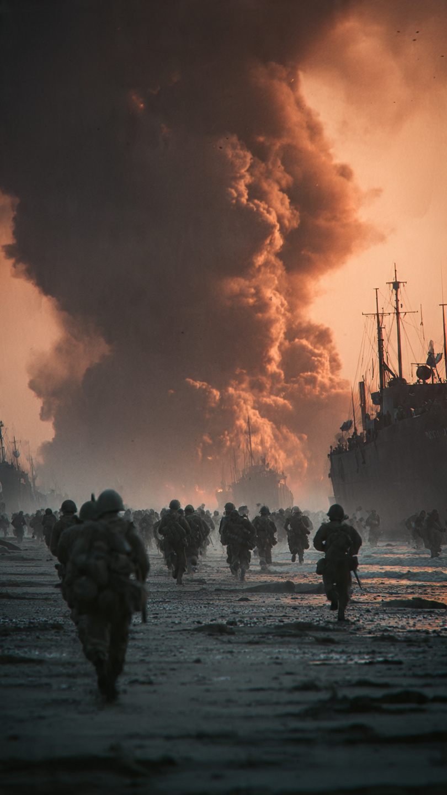

```html id="u9z4rc"
أعظم خدعة عسكرية خدعت جيشًا كاملًا | قصص تاريخية
```
في صباح السادس من يونيو عام 1944، كان آلاف الجنود يستعدون لأكبر عملية إنزال بحري في التاريخ.
كان الحلفاء يخططون لإنزال قواتهم على سواحل فرنسا لتحرير أوروبا من الاحتلال النازي.
لكن نجاح العملية لم يعتمد على عدد الجنود أو قوة الأسلحة فقط.
بل اعتمد أيضًا على واحدة من أذكى عمليات الخداع العسكري التي عرفها التاريخ.
كان الزعيم الألماني أدولف هتلر مقتنعًا بأن قوات الحلفاء ستهاجم منطقة با دو كاليه، لأنها أقرب نقطة بين بريطانيا وفرنسا.
ولو صدق هذا التوقع، لكانت القوات الألمانية مستعدة بالكامل لصد أي هجوم.
لكن قادة الحلفاء قرروا استغلال هذا الاعتقاد لصالحهم.
ووضعوا خطة سرية حملت اسم عملية فورتيتيود (Operation Fortitude).
بدأت الخطة بخداع غير مسبوق.
صنع الحلفاء دبابات وطائرات ومركبات مطاطية تبدو حقيقية من الجو.
وأقاموا معسكرات وهمية، ونصبوا هوائيات وأجهزة اتصال مزيفة.
بل إنهم أنشأوا جيشًا وهميًا كاملًا على الورق، وأوكلوا قيادته إلى الجنرال الأمريكي الشهير جورج باتون، لأن الألمان كانوا يعتقدون أنه أفضل قائد للهجوم.
وكان الهدف أن يظن الألمان أن الهجوم الرئيسي سيأتي من منطقة أخرى.
ولم يتوقف الأمر عند المعدات الوهمية.
فقد أرسل الحلفاء رسائل لاسلكية مزيفة، واستخدموا عملاء مزدوجين لنقل معلومات مضللة إلى الاستخبارات الألمانية.
وبدأت الصورة المزيفة تكتمل شيئًا فشيئًا.
حتى أصبح الألمان مقتنعين بأن الهجوم الحقيقي لم يبدأ بعد.
لكن...
ماذا حدث عندما بدأ الإنزال الفعلي في نورماندي؟
وهل نجحت الخطة كما أراد الحلفاء؟
هذا ما سنعرفه في الجزء الثاني.
📷 الصورة رقم 1
مع فجر السادس من يونيو عام 1944، بدأت عملية إنزال نورماندي.
تحركت آلاف السفن والطائرات التابعة للحلفاء نحو سواحل شمال فرنسا، بينما كان الجنود يستعدون للنزول إلى الشواطئ تحت نيران القوات الألمانية.
كانت واحدة من أكبر العمليات العسكرية في التاريخ، وشارك فيها أكثر من 150 ألف جندي في يومها الأول.
لكن المفاجأة أن القيادة الألمانية لم تقتنع بأن هذا هو الهجوم الرئيسي.
فبسبب عملية الخداع "فورتيتيود"، اعتقد كثير من القادة الألمان أن الإنزال في نورماندي مجرد محاولة لإلهائهم.
وكانوا ينتظرون الهجوم الحقيقي في منطقة "با دو كاليه".
ولهذا السبب، أبقوا عددًا كبيرًا من قواتهم ودباباتهم في مواقعها، بدلًا من إرسالها فورًا إلى نورماندي.
وقد منح هذا التأخير قوات الحلفاء وقتًا ثمينًا لتثبيت مواقعها على الشواطئ والتقدم إلى داخل فرنسا.
ولم يكن النجاح نتيجة المعدات الوهمية وحدها.
فقد لعب العملاء المزدوجون دورًا مهمًا في الخطة.
وكان أشهرهم العميل الإسباني خوان بوجول غارسيا، المعروف بالاسم الحركي "غاربو".
فقد نجح في كسب ثقة الاستخبارات الألمانية، وأرسل إليها معلومات صحيحة أحيانًا، وأخرى مضللة في الوقت المناسب، مما جعل القيادة الألمانية تصدقه حتى أثناء تنفيذ الإنزال الحقيقي.
وكانت تقاريره أحد الأسباب التي عززت الاعتقاد بأن الهجوم الأكبر لم يبدأ بعد.
وبعد أيام من القتال العنيف، تمكن الحلفاء من توسيع مناطق سيطرتهم في فرنسا.
وأصبحت عملية الإنزال نقطة تحول كبرى في الحرب العالمية الثانية.
ويرى كثير من المؤرخين أن نجاح الخداع العسكري كان عاملًا مهمًا ساعد على نجاح العملية، إلى جانب شجاعة الجنود والتخطيط العسكري الدقيق.
لكن...
لماذا تُعد "عملية فورتيتيود" حتى اليوم واحدة من أعظم عمليات الخداع العسكري في التاريخ؟
هذا ما سنعرفه في الجزء الثالث والأخير.
📷 الصورة رقم 2

بعد انتهاء الحرب العالمية الثانية، بدأ المؤرخون والباحثون بدراسة الأسباب التي أدت إلى نجاح عملية إنزال نورماندي.
وتوصل كثير منهم إلى أن عملية فورتيتيود كانت من أكثر خطط الخداع العسكري نجاحًا في التاريخ.
فهي لم تعتمد على الكذب وحده، بل على مزيج من المعلومات الحقيقية والمضللة، والمعدات الوهمية، والعملاء المزدوجين، والإشارات اللاسلكية المدروسة بعناية.
كل ذلك جعل القيادة الألمانية تتخذ قراراتها بناءً على معلومات غير صحيحة.
وقد أثبتت الوثائق التي كُشف عنها بعد الحرب أن هتلر وعددًا من كبار قادته ظلوا يعتقدون، حتى بعد بدء الإنزال في نورماندي، أن الهجوم الرئيسي سيأتي لاحقًا في منطقة "با دو كاليه".
ولهذا تأخر إرسال بعض القوات المدرعة إلى جبهة القتال، وهو ما منح الحلفاء فرصة أكبر لتثبيت مواقعهم والتقدم داخل الأراضي الفرنسية.
ويرى المؤرخون أن هذا التأخير كان أحد العوامل التي ساعدت على نجاح العملية، إلى جانب التخطيط العسكري وقوة القوات المشاركة.
واليوم، تُدرَّس عملية فورتيتيود في الأكاديميات العسكرية حول العالم باعتبارها مثالًا على أهمية المعلومات والاستخبارات في الحروب.
فقد أثبتت أن الانتصار لا يعتمد على عدد الجنود أو الأسلحة فقط، بل يعتمد أيضًا على القدرة على خداع الخصم وجعله يتخذ قرارات خاطئة في اللحظة الحاسمة.
ولهذا أصبحت هذه العملية نموذجًا يُذكر في كتب التاريخ والاستراتيجية العسكرية.
وتبقى قصة عملية فورتيتيود دليلًا على أن بعض أعظم الانتصارات في التاريخ لم تبدأ بإطلاق رصاصة، بل بدأت بخطة ذكية جعلت جيشًا كاملًا يصدق شيئًا لم يكن موجودًا أصلًا.
ولهذا استحقت أن تُعرف بأنها واحدة من أعظم عمليات الخداع العسكري في التاريخ.
🎖️🗺️ انتهت القصة 🗺️🎖️